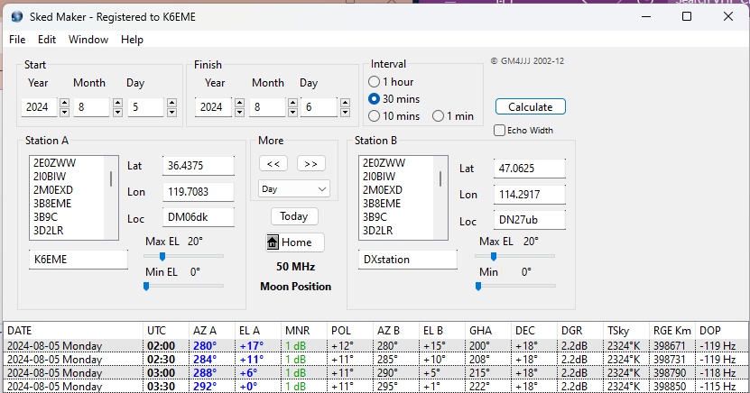

If you can decode 6 meter signals bounced off the moon you have an excellent 6 meter station! Here is a chance to find out if you can do it. Monday August 5, Lance W7GJ will be calling CQ Q65-60A Pileup 50.213 as the moon sets on the west
coast. Point your antenna at the moon (WSJT-X>View>Astronomical Data) as the moon sets (I did a chart for DM06 below, yours will vary) and see if you can decode signals. Lance has a powerful station, so it is a good test. Both Lance and you will be in ground
gain at the same time, so conditions are favorable. I will miss it as I will be at the 2024 EME Conference in Trenton, NJ with Joe. Have fun!
Matt K6EME DM06dk
PS: Q65 Pileup has some additional enhancements over Q65 for the DX station and eliminates the signal report thus shortening the number of messages required for a QSO. Go to: WSJT-X>File>Settings>Advanced and check boxes Special operating
activity and Q65Pileup. Also: WSJT-X>File>Settings>General and check box Decode after EME delay. If your decodes have a DT of about 2.5 it is a moonbounce decode.

From Lance:
As Es season is finally fading away, it is a great time to test out your station for some real long path DXing!
A week from today, 6m EME cndx look pretty decent, and everyone's local moonset is about an hour after sunset, so it is a pretty convenient time for most people to get on the air. So, if you are interested in mapping your ground gain lobes or just checking
out your station, I am planning to be on the air for most of the day. Even if you can't be available to actually transmit, many horizon-only stations have found it informative to just aim their antenna toward moonset and let WSJT-X record signals as their
moon moves down through their ground gain lobes.
I plan on calling CQ in the first sequence Q65-60A using Q65 PILEUP mode on 50.213. As usual, I will be monitoring the ON4KST EME CHAT page when I am QRV on 6m EME:
http://www.on4kst.info/chat/login.php?band=5
Based on input from a number of folks around the world, I am proposing that 50.213 become the 6m EME random calling frequency, and that 6m EME DXpeditions use 50.223. Moving the current 6m EME activity window (50.180-50.210) up to 50.210-50.230 should alleviate
some of the QRM problems being experienced by some stations (especially in the EU). In addition, this would help move EME activity further away from terrestrial SSB activity on and below 50.200.
GL and VY 73, Lance
Matt Kennedy
559.410.1616
www.akennedygroup.com